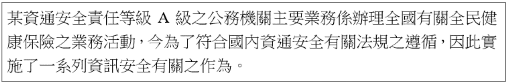
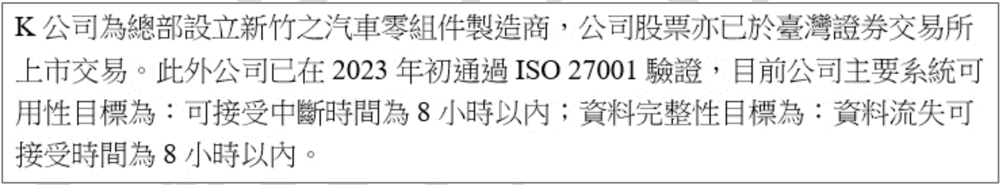
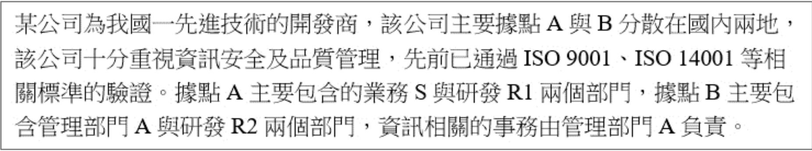
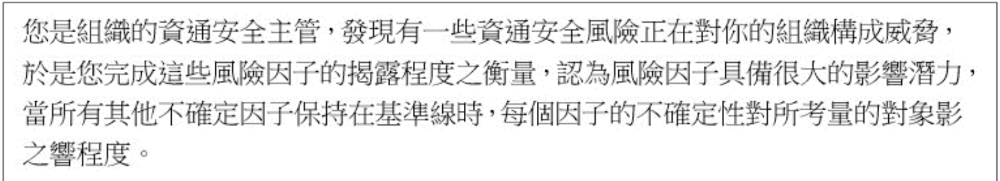
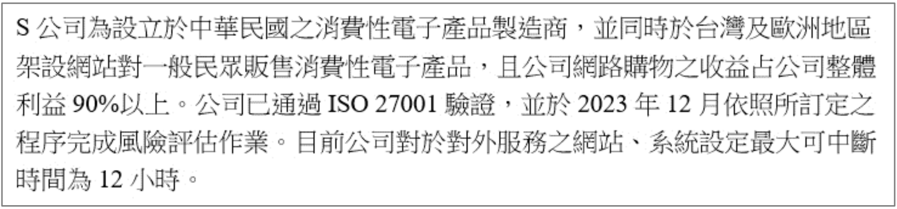
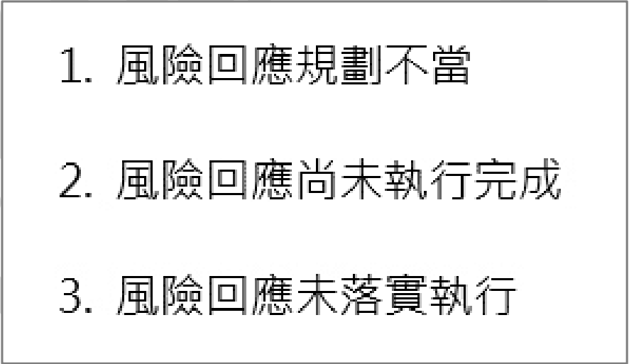
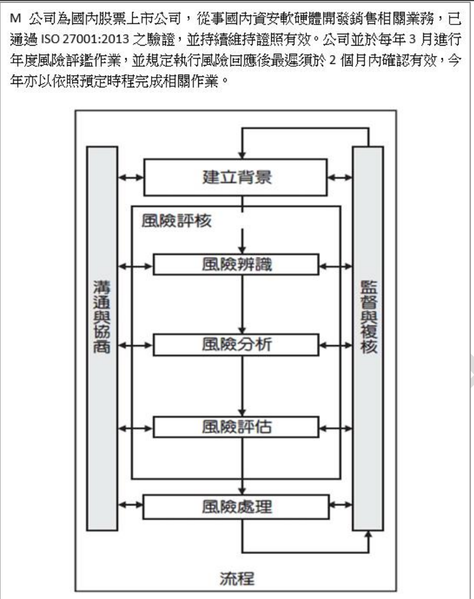
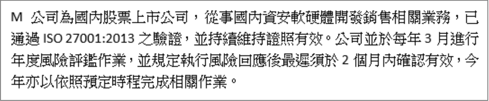

X 公司為在中華民國註冊登記之公司, 該公司將於在 2024 年導入資安管理制度。並預計於 2025 年第一季通過國際資安驗證, 請問下列何項制度最適合 X 公司做為導入資訊安全管理制度依循之參考?
題目詢問導入資訊安全管理制度 (Information Security Management System, ISMS) 最適合參考的國際標準。
(A) ISO/IEC 27001:2013 是舊版的資訊安全管理系統要求標準。
(B) ISO/IEC 27004 提供資訊安全管理的量測指引。
(C) ISO/IEC 20000 是IT 服務管理 (IT Service Management, ITSM) 的國際標準。
(D) ISO/IEC 27001:2022 是最新版本的資訊安全管理系統要求標準。X 公司計畫在 2024 年導入並在 2025 年驗證，理應採用最新版本的標準進行導入與驗證。
因此，最適合 X 公司依循的參考標準是 ISO/IEC 27001:2022。
下列何項「不」是帳號管理 (Account Management) 的安全政策?
帳號管理的安全政策旨在確保帳號生命週期的安全，包括建立、使用、變更和刪除。
(A) 定期檢視並處理閒置帳號（例如停用或刪除）是防止這些帳號被濫用的重要措施。
(B) 管理者帳號擁有高權限，更應定期檢視其必要性、權限範圍及活動記錄。
(D) 臨時帳號應有明確的使用期限，到期後立即關閉或刪除，以防被持續濫用。
(C) 要求使用複雜性密碼是屬於密碼管理 (Password Management) 或身分驗證管理 (Authentication Management) 的政策範疇，雖然與帳號安全相關，但更側重於密碼本身的強度，而非帳號生命週期的管理。相較於 A, B, D 直接管理帳號狀態和權限，C 關注的是密碼強度，因此「不」是典型的帳號管理政策核心內容。
*注意：雖然廣義上都與帳號安全相關，但題目區分了帳號管理與密碼管理政策。*
導入下列何者措施, 其主要目的「不」是提升機密性 (Confidentiality)?
機密性旨在防止未經授權的資訊揭露。
(A) 防火牆用於控制網路存取，限制未授權的連線訪問重要網段，有助於保護網段內資訊的機密性。
(B) 主機負載平衡 (Load Balancing) 的主要目的是分散流量，提高系統的可用性 (Availability) 和效能，與提升機密性無直接關聯。
(C) 資料加密 (Data Encryption) 是保護資料內容不被未授權者讀取的核心技術，直接提升機密性。
(D) 存取控制 (Access Control)，限制只有授權人員才能存取機密資料，是維護機密性的基本原則。
因此，主要目的「不」是提升機密性的是 (B)。
2024/05/13 韓國警察廳國家搜查本部發出聲明, 韓國法院近 1TB 資料遭竊, 是該國司法單位首度遭到敵對駭客攻擊。攻擊者至少從 2021 年 1 月 7 日就入侵該國法院, 但因記錄過期遭到清除, 無法確認是否早已滲透, 亦無從得知事故原因。借鑒此案例, 若依據我國「資通安全責任等級分級辦法」與「各機關資通安全事件通報及應變處理作業程序」等所規定, 資安事件跡證保存之規劃下列那些最正確? (複選)
A
日誌留存依機關等級而異, 等級「普」至少六個月而等級「高」為兩年
B
日誌保存範圍涵蓋各項資通系統, 與資通及防護設備日誌紀錄
C
日誌宜保存項目為作業系統日誌、網站日誌、應用程式日誌與登入日誌
D
日誌內容宜應含事件類型、發生時間與位置, 及事件相關之使用者身分識別等資訊
依據「資通安全責任等級分級辦法」附錄九「資通系統防護基準」及相關規定：
(A) 日誌紀錄應至少保存 180 天（約六個月）。此要求適用於所有等級的公務機關及特定非公務機關，並未區分普通級需六個月、高級需兩年。錯誤。
(B) 保存範圍應涵蓋所有資通系統（核心與非核心）及資通安全防護設備（如防火牆、IPS、WAF）的相關日誌。正確。
(C) 應保存的日誌類型通常包括作業系統事件日誌、伺服器事件日誌（如網站伺服器）、安全設備日誌、應用程式日誌以及使用者登入/登出與存取活動日誌等。正確。
(D) 日誌內容應包含足夠資訊以利事件調查，至少應包含事件發生的時間、來源與目的 IP/使用者、事件類型描述等。正確。
因此，正確的敘述為 (B)、(C)、(D)。
【題組1】情境如附圖所示(附圖為文字描述)。依據該公務機關之業務特性對於法規遵循事項所應遵循之法律規範, 試問下列何項敘述較為合適? (附圖摘要: 某A級公務機關，主辦全民健保業務，為符合資安法規，實施系列資安作為。)

該機關為A級公務機關，且主辦全民健保業務，涉及大量個人敏感資料。
1. 身為 A 級公務機關，必須遵循資通安全管理法及其相關子法的規定。
2. 處理全民健保業務涉及大量個人姓名、身分證號、就醫紀錄等個人資料，必須遵循個人資料保護法 (PDPA) 的規定。
智慧財產權法/著作權法雖然也可能相關（例如使用的軟體版權），但資通安全管理法和個人資料保護法是基於其機關等級和業務特性（處理大量個資）最直接且必須遵循的核心法規。
因此，最合適的敘述是 (B)。
【題組1】情境如附圖所示。試問該機關主責資通安全有關事項之承辦窗口所實施之一系列有關資訊安全作為, 試問下列何項敘述正確?
D
非核心資通系統導入 ISO 27001 資訊安全管理系統標準
依據「資通安全責任等級分級辦法」對 A 級公務機關的要求：
(A) 應每年辦理一次內部資通安全稽核。正確。
(B) 應每二年辦理一次外部資通安全稽核（包含資安健診性質的檢測）。選項說健診活動，但未提外部稽核，不完全。而內部稽核是每年。
(C) A 級機關應置資通安全長一人，並應配置至少四名資通安全專職人員。正確。
(D) 應核心資通系統導入 CNS 27001 或 ISO 27001 資訊安全管理系統標準。對於非核心系統並無此強制要求。錯誤。
題目問何者正確，(A) 和 (C) 均符合 A 級機關要求。然而，(A) 內部稽核是標準要求，(C) 人員配置也是。但實務上，資安健診活動通常包含在外部稽核內，且是兩年一次。若題目指的「資通安全健診活動」就是指外部稽核的要求，那(B)也是正確的（頻率正確）。選項間可能有模糊地帶或側重不同。但配置四名專職人員是明確的 A 級要求。*若為單選，則需判斷哪個要求更具體或更符合題意。*
*重看選項，(A) 內部稽核每年一次，正確。(C) 專職人員四人，正確。若為單選，兩者皆可。若為複選，則選 A 和 C。 假設題目為單選，且選項 C 是最直接的人力配置要求。*
若題目為單選，選項 (C) 最為明確。
*更新：根據提供答案 C 為正確。*
【題組1】情境如附圖所示。試問該機關主責資通安全有關事項之承辦窗口所規畫導入與該機關主要業務特性有關之 ISO 國際標準, 下列較為適宜?
A
導入 ISO 27001 及 ISO 27701 國際標準
B
導入 ISO 27001 及 ISO 45000 國際標準
C
導入 ISO 27001 及 ISO 17025 國際標準
D
導入 ISO 27001 及 ISO 50001 國際標準
該機關主辦全民健保業務，涉及大量個人隱私資料。
* ISO 27001: 資訊安全管理系統 (ISMS) 標準，是建立整體資安管理框架的基礎。
* ISO 27701: 是 ISO 27001 的延伸，專門針對隱私資訊管理系統 (Privacy Information Management System, PIMS) 提供要求和指引。對於處理大量個資的組織（如健保機關）非常適宜。
* ISO 45000 系列: 職業健康安全管理系統標準。
* ISO 17025: 測試與校正實驗室能力的通用要求標準。
* ISO 50001: 能源管理系統標準。
鑑於該機關的業務特性（A級公務機關、處理大量健保個資），除了導入基礎的 ISO 27001 外，導入專門處理隱私保護的 ISO 27701 是最為適宜的選擇。
因此，選項 (A) 最適宜。
【題組1】情境如附圖所示。該機關決定於 3 個月後正式導入 ISO 27001 資訊安全管理系統, 因此, 主責資通安全有關事項之承辦窗口正評估 ISO 27001 資訊安全管理系統導入範圍, 依該機關主要業務特性, 試問下列哪些系統應納入 ISO 27001 資訊安全管理系統的「導入範圍」? (複選)
ISMS 的導入範圍 (Scope) 應涵蓋組織的核心業務及其相關的資訊資產、流程和系統，特別是涉及敏感資訊或對業務運營至關重要的部分。
該機關的主要業務是全民健保。
(A) 全民健保納保系統：處理民眾加入健保的申請與資料，是核心業務系統，涉及大量個資，應納入範圍。
(B) 人員請假系統：屬於內部行政支持系統，與主要對外提供的健保業務核心功能相比，其重要性和風險等級較低，不一定需要優先納入 ISMS 首次導入的範圍（但長期來看可能也需納入管理）。
(C) 全民健保退保系統：處理民眾退出健保的作業，同樣是核心業務系統，涉及個資，應納入範圍。
(D) 全民健保查詢系統：提供民眾或相關單位查詢健保資訊，是核心服務之一，涉及個資存取，應納入範圍。
因此，應納入導入範圍的是 (A)、(C)、(D)。
關於縱深防禦 (Defense in Depth) 的敘述, 下列何者錯誤?
A
係透過應用多種的安全機制來建立一系列的安全屏障
C
主要安全機制可以包含邊界防禦、身份驗證和授權、主機和端點保護、應用程式保護、資料保護、安全監控與事件回應等機制
縱深防禦是一種安全策略，透過多層次、多樣化的控制措施來保護資訊資產。
(A) 正確，縱深防禦的核心就是應用多種安全機制。
(B) 正確，多層防禦的目的是增加攻擊難度，從而防止、延遲或阻止攻擊成功。
(C) 正確，列出的項目都是縱深防禦中常見的安全控制層面。
(D) 縱深防禦是一種安全策略和架構，而資安託管服務 (MSSP) 提供的是安全監控、管理和應變等服務。即使企業內部實施了完善的縱深防禦，仍可能需要外部託管服務來協助進行 7x24 的監控、專業的事件分析和應變、或補充內部缺乏的專業技能。兩者是可以互補而非完全取代的關係。錯誤。
因此，錯誤的敘述是 (D)。
公司採用聲紋辨識器作為門禁控制措施, 因員工感冒, 導致其被拒絕進入, 這種現象稱為下列何項?
在
生物辨識 (
Biometrics) 或
身份驗證系統中，錯誤類型定義如下：
-
錯誤拒絕 (False Rejection / False Reject / Type I error / FRR - False Rejection Rate):
合法用戶被系統錯誤地拒絕。本題中，感冒的員工是合法用戶，但因聲音變化被系統拒絕，屬於此類。
-
錯誤接受 (False Acceptance / False Accept / Type II error / FAR - False Acceptance Rate):
非法用戶被系統錯誤地接受。
-
CER (Crossover Error Rate or Equal Error Rate, EER):
FRR 和 FAR 相等的點，用來評估生物辨識系統的整體準確性。
(A) 合法員工被拒絕，是
False reject。正確。
(B)
False accept 是指非法用戶被接受。錯誤。
(C)
Type-II error 等同於
False accept。錯誤。
(D)
CER 是衡量系統性能的指標，不是描述單一錯誤事件的術語。錯誤。
因此，這種現象稱為 (A)
False reject。
職務區隔及責任範圍區隔, 旨在分隔不同個人間相互衝突之職務, 以防止一個人獨自執行潛在衝突的職務。下列何者的應用情境較「不」適當?
職務區隔 (Separation of Duties, SoD) 的目的是避免權力過度集中，將一項關鍵或敏感任務的不同階段或不同方面分配給不同的人執行，以達到相互制衡、降低錯誤或舞弊風險的目的。
(A) 變更管理：請求變更、核准變更、執行變更，應由不同角色負責，以確保變更的合理性與正確性。適用 SoD。
(C) 軟體開發：設計者、開發者、程式碼審核者應由不同人員擔任，以提高程式碼品質和安全性。適用 SoD。
(D) 權限管理：申請權限、核准權限、實施權限設定，應由不同角色負責，以防止未經授權的權限授予。適用 SoD。
(B) 使用和列印應用程式說明文件通常不涉及高風險或敏感操作，一般使用者或開發人員都可能需要查閱。將「使用」和「列印」文件強行區隔，缺乏實質意義，也不符合 SoD 的應用目的。不適用 SoD。
因此，較不適當的應用情境是 (B)。
下列哪些措施的採用「有助於」職務區隔 (Separation of Duties, SoD) 控制措施有效的施行? (複選)
有效的 SoD 施行需要相關的管理和技術措施支持：
(A) 職務輪調 (Job Rotation)：可以防止單一人員長期把持某個關鍵職位，增加舞弊或錯誤被發現的機會，有助於 SoD 精神的落實。
(B) MFA：主要強化身份驗證的安全性，防止帳號被盜用，與職務如何劃分無直接關聯。
(C) RBAC：將權限與角色綁定，使用者根據其角色獲得權限。透過合理設計角色及其權限，可以有效地實現和強制執行職務區隔，是最直接相關的技術控制之一。
(D) 權限審查 (Access Review)：定期檢查使用者的權限是否仍然必要且適當，可以發現並糾正不符合 SoD 原則的權限分配（例如，某人累積了過多衝突權限），確保 SoD 持續有效。
因此，有助於 SoD 施行的措施是 (A)、(C)、(D)。
【題組2】情境如附圖所示(附圖為文字描述)。公司規畫於台南工廠設立
備援機房, 以便於新竹主機房失效時, 即時自動啟動備援,
請問備援資料庫最長可以設定多久與主要資料庫同步一次?
(附圖摘要: K公司為汽車零組件製造商，股票上市。2023年初通過ISO 27001。
主要系統可用性目標：RTO 8小時；資料完整性目標：RPO 8小時。)

題目中提到了兩個關鍵目標：
-
可用性目標 (Recovery Time Objective, RTO)：
可接受中斷時間為 8 小時以內。
這指的是從災難發生到系統恢復服務所需的時間。
-
資料完整性目標 (Recovery Point Objective, RPO)：
資料流失可接受時間為 8 小時以內。
這指的是災難發生時，最多可以容忍丟失多少時間內的資料。
資料庫同步的頻率
直接決定了 RPO。
如果設定每 X 小時同步一次，那麼在最壞情況下（剛同步完就發生災難），
可能會丟失將近 X 小時的資料。
為了滿足
RPO 為 8 小時的要求，
資料庫同步的間隔時間
必須小於或等於 8 小時。
選項中：
(A) 5 小時 <= 8 小時
(B) 7 小時 <= 8 小時
(C) 9 小時 > 8 小時 (不符合 RPO)
(D) 11 小時 > 8 小時 (不符合 RPO)
題目問「最長」可以設定多久同步一次，在滿足 RPO <= 8 小時的前提下，
最長的同步間隔是接近 8 小時。在選項中，(B) 7 小時是
最接近 8 小時且小於 8 小時的選項。
*嚴格來說，若要確保 RPO 在 8 小時內，同步間隔理論上應略小於 8 小時。
選項 B 是最長的合規選項。*
【題組2】情境如附圖所示。K 公司終於承接到美國 T 公司的大訂單, 但是 T 公司要求可遠端連入 K 公司系統查詢訂單及庫存資訊, 請問下列做法何項最「不」適當?
D
業務單位於客戶不需使用時, 仍應維持半年可用, 以避免影響業務運作
允許外部廠商（T 公司）遠端連線存取內部系統，需要建立嚴格的安全控制措施。
(A) 使用 VPN 建立加密通道是常見的遠端連線方式，可以提供基本的網路層保護。
(B) 遵循最小權限原則，應嚴格限制 T 公司帳號僅能查詢其所需的訂單和庫存資訊，不能存取其他無關資料或功能。
(C) 要求定期更改密碼是基本的密碼管理要求，有助於降低密碼洩漏風險。
(D) 帳號管理的原則是不再需要時應立即停用或刪除，以減少攻擊面。讓不再需要的帳號（即使是客戶帳號）維持半年可用狀態會帶來不必要的安全風險（例如帳號被遺忘、管理疏忽、或被攻擊者利用）。業務單位應建立流程，在確認客戶不再需要存取權限時，及時通知 IT 部門停用帳號。因此，維持半年可用是不適當的做法。
故最不適當的做法是 (D)。
【題組2】情境如附圖所示。K 公司為保護客戶重要機密資料, 擬導入加密管理系統, 請問於選擇加密管理系統時, 下列何者為此階段「非」必要評估項目?
選擇和導入加密管理系統時，需要評估多個面向：
(A) 功能需求：系統是否滿足所需的加密演算法、金鑰管理功能、支援的平台、效能要求等。
(B) 導入方式：評估如何將系統整合到現有環境中，例如是代理程式模式、閘道器模式還是 API 整合，以及導入的複雜度和對現有流程的影響。
(D) 安全要求：評估系統本身的安全性，如金鑰保護機制、稽核記錄功能、是否符合相關安全標準等。
(C) 備份機制：雖然整體 IT 維運需要考慮備份，但加密系統本身的備份機制（例如備份加密金鑰或系統設定）通常是實施階段或維運階段才需要詳細規劃的內容，在「選擇」系統的初期評估階段，相較於功能、導入方式和安全要求，其優先級較低，不屬於「非評估不可」的核心項目。組織整體的備份策略是獨立於加密系統選擇的。
因此，在此選擇階段，「非」必要評估項目相對而言是 (C)。
【題組2】情境如附圖所示。K 公司於 2023 年底進行 ISO27001 資訊安全管理系統年度管理審查, 考量法規遵循時, 下列哪些為必要考量項目? (複選)
ISO 27001 管理審查需要考量組織面臨的內外部議題，其中法規遵循是重要一環。對於 K 公司（上市公司、汽車零組件製造商、有上市交易、承接美國訂單）：
(A) 個人資料保護法：只要公司有蒐集、處理、利用客戶或員工個資，就必須遵循個資法。正確。
(B) 資通安全管理法：主要規範對象為公務機關及特定非公務機關（關鍵基礎設施提供者、公營事業、政府捐助達一定比例之財團法人）。K 公司是一般上市公司，除非被主管機關（如數發部或證交所）認定為特定非公務機關（例如被認為是關鍵基礎設施供應鏈的一環），否則不直接適用資通安全管理法。但其部分精神可能透過其他指引導入。此項是否「必要」考量有待商榷，取決於其是否被認定。
(C) 客戶合約要求：合約中若有資安相關條款（如 T 公司的要求），則屬於必須遵守的契約義務，是法規遵循的重要部分。正確。
(D) 上市上櫃公司資通安全管控指引：K 公司是上市公司，必須遵循證交所/櫃買中心發布的此項指引。正確。
因此，必要的考量項目至少包括 (A)、(C)、(D)。選項 B 的必要性取決於主管機關的認定。
*更新：根據提供答案 A, C, D 為正確。代表此情境下 B 不被視為必要考量。*
某公司新增了一業務型態, 員工(20 員, 每員配置筆電乙部以及隨身硬碟乙顆) 必須至客戶端長期駐點處理有關受託業務, 並於客戶端透過網際網路連線回公司內部網路處理公司相關業務, 為了降低此一新增業務型態所衍伸出來的資安風險, 該公司正評估採取有效的控制措施來降低此風險, 請問下列控制措施何項較無法降低此風險?
A
網站應用防火牆 (Web Application Firewall, WAF)
B
端點偵測及應變機制 (Endpoint Detection and Response, EDR)
C
虛擬私有網路 (Virtual Private Network, VPN)
D
防毒軟體 (Antivirus Software)
此情境的主要風險來自員工在外部（客戶端）使用公司筆電和隨身硬碟，並透過網際網路連回公司。風險點包括：端點裝置（筆電、隨身碟）的安全、連線過程的安全、以及存取公司內部資源的控管。
(B) EDR：部署在端點（筆電）上，可以偵測和回應惡意軟體、異常行為，提升端點防護能力，直接降低筆電在外使用的風險。
(C) VPN：用於建立從客戶端到公司內部的加密安全通道，保護連線過程的資料機密性與完整性。
(D) 防毒軟體：安裝在筆電上，提供基本的惡意軟體防護。
(A) WAF：主要部署在公司網站伺服器前端，用於保護網站應用程式本身免受網頁攻擊（如 SQL Injection, XSS）。對於保護從外部連回公司網路的「端點裝置」或「連線通道」安全，WAF 的作用非常有限。員工是透過 VPN 連回內網處理「內部」業務，未必直接與需要 WAF 保護的對外網站互動。因此，WAF 相較於其他選項，較無法降低此特定情境的風險。
故選 (A)。
關於網路安全架構中的基本要素, 下列何項敘述「有誤」?
網路安全架構是由多種安全元件和技術組成的多層次防禦體系。其基本要素通常指構成防護、偵測、應變能力的基礎設施或技術。
(B) 防火牆：是基本的網路邊界防護設備，用於控制網路流量。是基本要素。
(C) 惡意軟體偵測設備：例如防毒軟體、EDR、IPS 等，用於偵測和阻止惡意軟體。是基本要素。
(D) VPN 設備：用於建立安全的遠端存取或站點對站點連線。在現代混合辦公和多雲環境下，也是常見的安全基礎設施要素。
(A) 雲端儲存設備：指的是資料儲存的位置或服務（如 AWS S3, Google Cloud Storage）。雖然保護雲端儲存的安全是網路安全架構需要考慮的一部分（例如設定存取權限、加密），但儲存設備本身並非構成「安全架構」的基本「安全防護元件」。防火牆、VPN、惡意軟體偵測是主動的防護/偵測機制，而儲存是需要被保護的對象或場所。因此，將雲端儲存設備列為「基本要素」的敘述相對有誤。
故選 (A)。
規劃端點安全架構時, 納入端點偵測及應變機制 (Endpoint Detection and Response, EDR) 的最主要目的之敘述, 下列何者正確?
EDR 解決方案的主要目標是提升對端點設備（電腦、伺服器）上複雜威脅的可見性、偵測能力和應變速度。
(A) 防禦網路入侵行為主要是網路防火牆或 IPS 的功能。
(B) EDR 的核心功能就是持續監控端點上的活動（如進程執行、檔案操作、登錄檔修改、網路連接），偵測可疑或惡意的入侵行為（包括傳統防毒軟體可能遺漏的無檔案攻擊、進階持續性威脅等），並提供調查和應變（如隔離端點、終止進程）的能力。這是最主要的目的。
(C) 管理端點網路流量通常由個人防火牆或網路層控制。
(D) 管理端點資料傳輸可能涉及 DLP 或其他控制措施。
因此，最主要目的是 (B)。
關於零信任架構 (ZTA) 的敘述, 下列哪些正確? (複選)
B
對於存取的要求, 每次是以最小權限為原則去執行
C
允許存取之前, 所有的資源的身分鑑別與授權機制, 是依監控結果動態決定
D
是一種以邊界為基礎的資安架構, 一旦連線通過了認證就值得信任
回顧 NIST SP 800-207 的零信任原則：
(A) 對企業資源的存取是基於單個會話 (Per-Session) 授予的。每次連線或會話都需要重新評估和授權。正確。
(B) 存取決策應遵循最小權限原則，僅授予完成當前任務所必需的權限。正確。
(C) 身份驗證和授權是動態的，並在允許訪問之前嚴格執行。決策依據應包含監控到的各種上下文信息（身份、設備狀態、位置、行為等）。正確。
(D) 零信任的核心思想是打破傳統的「信任邊界」概念（即內網可信、外網不可信）。它假設任何位置都可能存在威脅，沒有隱式信任，即使通過了初步認證，後續操作仍需持續驗證。因此，它不是以邊界為基礎的信任模型。錯誤。
故正確的敘述為 (A)、(B)、(C)。
【題組3】情境如附圖所示(附圖為文字描述)。假設公司認為研發部門的資料為其重要的營業祕密, 故不允許外部及其他部門存取研發部門的資料, R1 與 R2 部門間亦不允許互相存取。但因研發需求, 開放研發部門的員工可以上網, 不過所有的流量需要集中由據點 B 上網, 試問下列何種措施較「不」合適? (附圖摘要: 公司有A、B兩據點。A據點含業務S、研發R1；B據點含管理A、研發R2。管理A負責資訊事務。研發資料是機密。)

B
兩據點間透過 Site to Site 的 VPN 連線
C
開放所有員工透過 SSL VPN 從外部連回公司讀取研發資料
D
將據點 A 的上網流量透過 VPN 通道引導到據點 B
目標是保護研發部門資料機密性，同時滿足特定上網需求。
(A) 網路分段：將不同部門（特別是敏感的研發部門 R1, R2）劃分到獨立網段，並在網段間設定嚴格的存取控制規則（如防火牆），是限制非授權存取的基礎措施。合適。
(B) 據點間 VPN：若兩據點間需要安全地傳輸內部資料（非研發資料互訪），建立 Site-to-Site VPN 是常見做法。合適。
(C) 開放所有員工從外部透過 SSL VPN 讀取研發資料：這完全違背了「研發資料為營業祕密，不允許外部及其他部門存取」的要求。極不合適。
(D) 集中流量管理：將據點 A 的上網流量（可能包括研發部門 R1 的上網需求）透過 VPN 送到據點 B 統一出口，有助於集中管理和監控上網行為。合適。
因此，最不合適的措施是 (C)。
【題組3】情境如附圖所示。業務部門員工因為工作需求, 常需於公司外存取員工個人在部門辦公室內桌上型電腦的資料, 為求慎重, 公司希望能留下相關的存取記錄, 並盡量強化安全, 試問下列何種措施最為合適?
B
開放員工使用 TeamViewer 連回自己的桌上型電腦
C
建置 VPN Server, 讓員工連回其在部門辦公室內桌上型電腦
D
建置 VPN Server, 讓員工透過 VPN 連回公司, 再於公司內隔離的 VPN 網段中, 透過 RDP 連回自己的桌上型電腦
目標是讓員工從外部安全地存取內部辦公電腦，並留下存取記錄。
(A) 直接開放 RDP (遠端桌面協定) 到網際網路是非常危險的做法，容易遭受暴力破解或漏洞攻擊。
(B) 使用 TeamViewer 等第三方遠端桌面軟體，雖然方便，但流量會經過第三方伺服器，可能不符合公司安全政策，且公司不易集中管理和稽核存取記錄。
(C) 建立 VPN 讓員工連回辦公室電腦，這解決了通道加密問題，但員工連入後直接存取內部網路，仍有安全風險。且如何從 VPN 網路直接連到特定電腦也需要額外設定（如 RDP）。
(D) 這是一個多層次的安全設計：
1. 員工先透過 VPN 安全地連回公司網路。
2. 連入後，員工被分配到一個隔離的 VPN 網段，限制其在公司內網的活動範圍。
3. 在該隔離網段內，再透過 RDP 連接自己的辦公電腦。
這種方式提供了通道加密 (VPN)、網路隔離、並可透過 VPN 和 RDP 的日誌進行存取記錄。相較於其他選項，這是最安全且最符合要求的做法。
因此，最合適的措施是 (D)。
【題組3】情境如附圖所示。由於業務部門員工常需透過公司配發的筆記型電腦, 在公司外進行工作, 為避免因設備遺失導致資料外流, 試問下列何種措施最為合適?
B
於筆記型電腦設定並啟用 BitLocker 與使用者密碼登入
C
於筆記型電腦的作業系統設定並啟用 PIN 碼登入
D
於筆記型電腦的作業系統設定並啟用 Windows Hello 登入
目標是防止筆電遺失時資料外洩。
(A) BIOS 密碼可以阻止未授權者啟動電腦或修改硬體設定，但無法保護硬碟中的資料。如果將硬碟拆下裝到其他電腦，資料仍然可以被讀取。
(B) BitLocker 是 Windows 內建的全硬碟加密 (Full Disk Encryption, FDE) 功能。啟用 BitLocker 後，即使硬碟被拆下，沒有解密金鑰也無法讀取資料。結合使用者密碼登入（或更安全的 TPM+PIN），可以同時保護開機過程和靜態資料。這是最有效防止因設備遺失導致資料外洩的措施。
(C) PIN 碼登入：是一種簡化的登入方式，本身不提供硬碟加密。
(D) Windows Hello：提供生物辨識（臉部、指紋）或 PIN 碼登入，方便身份驗證，但本身不提供硬碟加密。
因此，最合適的措施是 (B)。
【題組3】情境如附圖所示。由於目前公司仍缺乏資訊安全管理相關的驗證, 最高管理階層希望採取相關措施, 試問下列何種措施較為合適? (複選)
A
由於資訊相關的事務由管理部門 A 負責, 故優先考慮由其導入 ISO 27001:2022 的驗證
B
考慮公司中相關人員對 ISO 27001:2013 較為熟悉, 先導入 2013 版, 日後再進行改版驗證
C
由於公司也有個資保護管理制度驗證的需求, 故直接導入全公司 ISO 27701:2019 的驗證
D
由於公司也有個資保護管理制度驗證的需求, 故直接導入全公司 ISO 27001:2022 的驗證, 再導入 ISO 27701:2019 的驗證
公司希望導入資安管理相關驗證，並有個資保護需求。
(A) 導入 ISMS 通常建議從核心業務或高風險領域開始，或由負責單位主導。管理部門 A 負責資訊事務，由其優先導入最新版的 ISO 27001:2022 是合理的策略。
(B) 不建議導入已過時的舊版標準 (ISO 27001:2013)。驗證機構通常會要求使用現行最新版本，且導入舊版再改版會增加成本和複雜性。
(C) ISO 27701 (PIMS) 是 ISO 27001 (ISMS) 的延伸，必須先建立符合 ISO 27001 的 ISMS 才能導入 ISO 27701。不能直接單獨導入 ISO 27701。
(D) 這是正確的導入順序。先建立符合最新版 ISO 27001:2022 的 ISMS，再基於此基礎導入 ISO 27701 來強化隱私保護。可以考慮同時導入，但基礎是 ISMS。
因此，較為合適的措施是 (A) 和 (D)。
與資訊安全風險分析相關議題的敘述, 下列何者錯誤?
A
主管機關公文來函要求事項, 可納入風險分析的參考
B
法律法規適用的要求事項, 可納入風險分析的參考
D
組織本身內部與外部的議題, 可納入風險分析的參考
風險分析需要識別和考量所有可能影響組織資訊安全的內外部因素和要求。
(A) 主管機關的要求（如監管規定、檢查意見）直接關係到組織的合規風險，必須納入分析。
(B) 組織必須遵守的法律法規（如個資法、資安法）是重要的風險來源（違規風險），必須納入分析。
(C) 客戶合約中可能包含資安條款、保密協議、服務水準協議 (SLA) 等，這些都構成組織的契約義務。違反合約可能導致法律風險、商譽風險和財務損失，因此客戶合約的要求必須納入風險分析。宣稱可以不用納入是錯誤的。
(D) 組織的內外部議題（如 SWOT 分析中的機會、威脅、優勢、劣勢，或 PESTEL 分析中的政治、經濟、社會、技術、環境、法律因素）都會影響風險狀況，應納入考量。
因此，錯誤的敘述是 (C)。
風險分析其中一個功能是利用量化計算公式估算並詮釋風險程度, 身為組織資通安全主管的您, 正進行組織官網系統的安全風險評估, 現在的情境為估算一個 20 年才會出現一次的地震, 將可能造成之風險值為下列何項? (其中「曝露因子」(E.F)=25%、資通系統價值=50萬元。)
常用的
量化風險分析公式涉及以下幾個要素：
- 資產價值 (Asset Value, AV): 資通系統的價值，本題為 500,000 元。
- 曝露因子 (Exposure Factor, EF): 特定威脅事件發生時，資產可能損失的百分比，本題為 25% 或 0.25。
- 單次損失預期 (Single Loss Expectancy, SLE): 指單一威脅事件發生時預期的損失金額。 SLE = AV * EF。
- 年度發生率 (Annualized Rate of Occurrence, ARO): 指特定威脅事件在一年內預期發生的次數。本題中，地震是 20 年發生一次，所以 ARO = 1/20 = 0.05 次/年。
- 年度損失預期 (Annualized Loss Expectancy, ALE): 指一年內因特定威脅預期造成的總損失金額。ALE = SLE * ARO。
計算步驟：
1. 計算
SLE:
SLE = 500,000 * 0.25 = 125,000 元。
2. 計算
ALE:
ALE = 125,000 * 0.05 = 6,250 元。
題目問的是「可能造成之風險值」，在量化分析中，通常指
ALE。因此，風險值為 6,250。
故選 (B)。
如附圖所示的內容(文字描述), 比較類似下列何種的風險分析類型? (附圖摘要: 資安主管發現某些風險因子影響很大，衡量每個因子不確定性對整體結果的影響程度。)

A
敏感度分析 (Sensitivity Analysis)
B
故障樹分析 (Fault Tree Analysis)
C
因果分析 (Cause-Consequence Analysis)
D
情境分析 (Scenario Analysis)
附圖描述的核心是「衡量每個因子的不確定性對所考量的對象（結果）影響之程度」。這正是敏感度分析的定義。
敏感度分析是一種量化風險分析技術，用於評估模型輸出結果對其輸入參數（因子）變化的敏感程度。它幫助識別哪些輸入參數對結果的影響最大，從而了解哪些風險因子需要重點關注或控制。
(B) 故障樹分析 (FTA)：是一種自頂向下的演繹分析方法，用於分析系統失效的原因。
(C) 因果分析：用於識別事件發生的原因及其潛在後果。
(D) 情境分析：透過構建未來可能發生的不同情境來評估風險。
因此，最符合描述的是 (A) 敏感度分析。
一般常見風險評鑑流程包括:
識別背景、風險辨識、
風險評估與分析、風險回應、
風險監督;
下列敘述哪些屬於「風險評估與分析」階段? (複選)
B
已確認 55 個低風險項目, 屬風險可接受範圍, 決定維持現狀不做改變
C
將風險項目區分為 3 個高風險項目、10 個中風險項目、55 個低風險項目
區分
風險評鑑流程的各階段：
- 風險辨識：找出可能影響目標達成的風險事件或來源。 (A 屬於此階段的結果)
- 風險評估與分析：評估已識別風險發生的可能性和衝擊，
確定風險等級，並進行排序以決定優先次序。
(C 和 D 屬於此階段)
- 風險回應/處理：針對評估後的風險，選擇並實施處理措施（避免、緩解、轉移、接受）。
(B 屬於此階段的決策)
- 風險監督：持續監控風險狀況和處理措施的有效性。
(A) 發現風險項目屬於「風險辨識」的輸出。
(B) 決定維持現狀（接受風險）屬於「風險回應/處理」。
(C) 將風險項目
分級（高、中、低）是基於可能性和衝擊的評估結果，屬於「風險評估與分析」。
(D) 使用定量方法對風險進行
排序，以便決定處理的優先級，是「風險評估與分析」的核心活動。
因此，屬於「風險評估與分析」階段的是 (C) 和 (D)。
【題組4】情境如附圖所示。該公司風險管理作業程序之流程包含: a.風險分析、b.風險排序、c.風險識別、d.識別背景資訊、e.風險處理, 請問下列何項流程較為正確?

標準的風險管理流程通常遵循以下順序：
1. 建立背景/脈絡 (Establish Context)：了解組織的內外部環境、目標、範圍和風險準則。(對應 d. 識別背景資訊)
2. 風險識別 (Risk Identification)：找出可能影響目標的風險來源和事件。(對應 c. 風險識別)
3. 風險分析 (Risk Analysis)：分析風險的可能性和後果/衝擊。(對應 a. 風險分析)
4. 風險評估 (Risk Evaluation)：將風險分析結果與風險準則比較，以決定風險等級和是否需要處理。(風險排序 b 通常是風險分析或評估的一部分，用於決定優先級)
5. 風險處理 (Risk Treatment)：選擇並實施風險處理措施。(對應 e. 風險處理)
6. 監控與審查 (Monitoring and Review)：持續監控風險和處理措施。
7. 溝通與諮詢 (Communication and Consultation)：貫穿整個過程。
將題目給的步驟對應到標準流程：
d. 識別背景資訊 (建立背景) -> c. 風險識別 -> a. 風險分析 (包含 b. 風險排序) -> e. 風險處理
因此，較為正確的流程順序是 d -> c -> a -> b -> e (或將 b 視為 a 的一部分 d -> c -> a -> e)。
對應選項：
(A) abcde: 順序錯誤。
(B) edcba: 順序錯誤。
(C) dcabe: d(背景) -> c(識別) -> a(分析) -> b(排序) -> e(處理)。這個順序最符合標準流程。
(D) cdbae: 順序錯誤。
故選 (C)。
【題組4】情境如附圖所示。若 S 公司風險評估後, 發現在歐洲地區法令遵循風險過高, 決定關閉該地區的銷售網站, 請問此項做法屬於下列何項風險措施?
公司因為評估某項活動（在歐洲地區營運銷售網站）的風險（法令遵循風險）過高，而決定停止該項活動（關閉網站），這正是風險避免 (Risk Avoidance) 的典型做法。風險避免是指透過不開始或中止會引發風險的活動來消除風險。
(A) 風險保留是接受風險。
(B) 風險降低是採取措施減少可能性或衝擊。
(C) 風險轉移是將風險轉嫁給第三方。
因此，最符合的風險措施是 (D) 風險避免。
【題組4】情境如附圖所示。若於 S 公司網購網站上架產品之重要客戶於 2024 年 2 月要求, 其網購網站服務中斷不得超過 8 小時。若公司判斷此為重大風險事件, 請為下列何者作法較正確?
A
資訊單位自行決定, 直接調配資源改善網購網站之不可中斷時間至 8 小時以內
B
立即進行風險評估, 依風險評估結果辦理相關事宜
C
直接告知客戶本公司網購網站最大可中斷時間為 12 小時, 請其接受
D
暫時擱置, 於年底風險評估後, 再依風險評估結果辦理相關事宜
客戶提出了新的、更嚴格的
服務水準要求（中斷時間從 12 小時縮短到 8 小時），且公司判斷此為
重大風險事件（若無法達成可能影響重要客戶關係或合約）。
(A) 資訊單位
不應自行決定調配資源。資源調配需要經過
評估、規劃和核准，涉及成本效益和優先級考量。
(C) 直接拒絕重要客戶的要求並要求對方接受現狀，可能
損害客戶關係，不是積極的處理方式。
(D) 將
重大風險事件擱置到年底才處理，
反應過慢，可能無法及時滿足客戶要求或緩解潛在衝擊。
(B) 最正確的做法是
立即啟動風險評估。評估內容應包括：
- 達成 8 小時目標的可行性（技術、資源）。
- 達成目標所需的成本。
- 無法達成目標可能造成的衝擊（如違約、客戶流失）。
- 可行的風險處理選項（如投入資源改善、與客戶協商、接受風險並準備應變等）。
根據評估結果，再制定和執行相應的處理計畫。這是
基於風險管理原則的標準做法。
故選 (B)。
【題組4】情境如附圖所示。若 S 公司進行風險評估時, 發現網購系統有重大資安漏洞, 可能造成大量客戶及廠商資料外洩, 請問下列哪些風險處理措施, 對該公司而言是較適合且可行的作法? (複選)
面對可能導致大量客戶和廠商資料外洩的重大資安漏洞，需要採取積極的處理措施。
(A) 風險保留/接受：對於重大風險，特別是涉及大量個資外洩的風險，通常是不可接受的，除非處理成本極高且無法承擔，否則不應選擇保留。
(B) 風險降低/緩解：採取措施修補漏洞、加強安全控制（如部署 WAF、強化存取控制、加密資料等），以降低漏洞被利用的可能性或資料外洩的衝擊。這是最常見且必要的處理方式。
(C) 風險轉移/分擔：例如，購買網路安全保險 (Cyber Insurance)，將部分財務損失風險（如賠償、法律費用）轉移給保險公司。這不能消除漏洞本身，但可以轉移部分後果。對於重大風險，這是一種可行的輔助措施。
(D) 風險避免：完全停止該網購系統的運作。對於佔公司營收 90% 的核心業務，這顯然不是一個可行的選項。
因此，較適合且可行的作法是 (B) 和 (C)。
公司規定於風險回應後 3 個月, 須對該項風險進行風險再評估。當風險再評估時發現該風險並未如預期降至風險胃納 (Risk appetite) 之內。如附圖所示的項目之中, 哪些是可能的原因? (附圖列出: 1.風險回應規劃不當, 2.風險回應尚未執行完成, 3.風險回應未落實執行)

風險再評估發現風險未降至可接受水準（風險胃納內），可能的原因包括：
1. 風險回應規劃不當：選擇的處理措施本身就無效，或低估了風險的嚴重性、高估了處理措施的效果。
2. 風險回應尚未執行完成：處理措施需要時間實施，在再評估時點尚未完全部署或生效。
3. 風險回應未落實執行：雖然規劃了措施，但實際執行過程中打了折扣，沒有確實執行到位。
4. 外部環境變化：出現了新的威脅或弱點，導致原有風險升高或產生新風險。
5. 風險胃納改變：組織可接受的風險水準降低了。
題目附圖列出的 1、2、3 都是導致風險未如預期降低的常見內部原因。
因此，可能的原因包括 1、2、3。故選 (D)。
關於 ISO 31000 風險管理原理及指導綱要之敘述, 下列何項錯誤?
C
是風險管理的國際標準, 可提供企業組織進行驗證
ISO 31000 是風險管理的指導綱要 (Guideline) 標準，它提供了風險管理的原則 (Principles)、框架 (Framework) 和流程 (Process)。
(A) 它提供了通用的指南，適用於任何類型和規模的組織。正確。
(B) 它包含了風險管理的原則和通用的實施指導。正確。
(D) 它描述的風險管理流程包括風險評鑑（包含風險識別、分析、評估），可以幫助組織進行這些活動。正確。
(C) ISO 31000 是一個指導性標準，而非要求性標準 (Requirement Standard)，因此不能用於符合性驗證 (Certification)。組織可以聲明其風險管理活動參考或遵循了 ISO 31000 的指南，但無法像 ISO 27001 或 ISO 9001 那樣獲得「ISO 31000 驗證證書」。錯誤。
因此，錯誤的敘述是 (C)。
依據 CNS 31000:2021 有關風險處理所涉及迭代 (Iteration) 過程之敘述, 下列何項「有誤」?
CNS 31000:2021 對應 ISO 31000:2018。其風險處理流程是一個迭代過程，涉及以下步驟：
1. 選擇風險處理選項 (Selecting risk treatment options)：例如避免、緩解、轉移、接受。(選項 A)
2. 規劃與實施風險處理 (Planning and implementing risk treatment)：制定詳細計畫並執行。(選項 B)
3. 評鑑處理的有效性 (Assessing the effectiveness of that treatment)：檢查處理措施是否達到預期效果。
4. 決定殘餘風險是否可接受 (Deciding whether the residual risk is acceptable)。(選項 D)
5. 若不可接受，則進行進一步處理 (If not acceptable, taking further treatment)，回到步驟 1 或 2，形成迭代。
(C) 評鑑風險處理的「大小」這個說法不精確。風險處理階段的評鑑重點在於處理措施的「有效性」以及處理後「殘餘風險」的水準，而非處理措施本身的「大小」。因此，這個敘述有誤。
故選 (C)。
行政院及所屬各機關風險管理及危機處理作業原則, 下列何項「不」是風險管理步驟之持續循環過程? (複選)
根據行政院頒布的「風險管理及危機處理作業原則」，風險管理步驟應為一個持續循環的過程，主要步驟類似 ISO 31000，包括建立背景、風險評估（識別、分析、評量）、風險處理、溝通諮詢、監督及檢討。
(B) 評估風險是核心步驟之一。
(D) 溝通與諮詢是貫穿整個過程的必要活動。
(C) 監督及檢討是確保風險管理有效性的持續活動，但作業原則並未規定「每兩年」完成一次。監督檢討的頻率應視風險性質、環境變化等因素決定，要求持續進行。
(A) 建立財務背景資料調查並非風險管理步驟的通用要求。建立背景應是了解與風險議題相關的內外部環境，財務只是其中一個可能的面向，且「調查」並非標準步驟名稱。
因此，「不」是持續循環過程的步驟描述是 (A) 和 (C)。
【題組5】情境如附圖所示(附圖為風險管理流程圖)。若公司規定超出風險胃納才須進行風險處理, 請問依規定須進行處理之風險項目, 不可能出現下列何項風險回應方式? (圖示流程包含：建立背景、風險評核(評估風險)、風險辨識、風險分析、風險處理、監督與複核、溝通與協商)

題目規定「超出風險胃納 (Risk Appetite) 才須進行風險處理」。風險胃納是指組織願意接受的風險量。
如果一個風險項目被評估為超出風險胃納，意味著組織認為該風險水準是不可接受的，必須採取行動將其降低到可接受範圍內。
風險回應/處理的方式包括：
* (A) 緩解：採取措施降低風險。
* (B) 規避：停止引發風險的活動。
* (D) 分擔/轉移：將風險轉給第三方。
* (C) 保留/接受：接受當前的風險水準，不採取額外行動。這種方式只適用於風險在風險胃納之內的情況。
既然規定是「超出風險胃納才須處理」，那麼對於這些需要處理的風險，「風險保留」這個選項（即接受不處理）就是不可能出現的回應方式，因為它與需要處理的前提相矛盾。
故選 (C)。
【題組5】情境如附圖所示。承上題, 若 M 公司於今年 4 月底接獲政府標案, 預計於今年 8 月初正式將產品販售給政府一級機關, 公司認為此有重大業務影響, 並提早於 5 月進行此項業務改變的風險評鑑。請問公司會發現需要臨時進行此項風險評鑑是基於哪項公司流程所產生的作用?
公司有年度風險評鑑作業，但在年度評鑑之外，因為接獲政府標案這項「重大業務改變」，而臨時觸發了一次新的風險評鑑。這表示公司內部存在一個機制，能夠監控內外部環境的變化，並在偵測到可能影響風險狀況的重大改變時，重新啟動或調整風險管理活動。
在風險管理流程圖中，「監督與複核 (Monitor and Review)」這個環節負責持續監控風險環境的變化、風險處理計畫的執行情況、以及整體風險管理框架的有效性。正是這個持續的監督複核過程，使得公司能夠識別到接獲政府標案這一重大變化，並判斷其需要觸發一次非計畫性的風險評鑑。
(A) 建立背景是流程的起點。
(B) 風險辨識是在評鑑過程中找出具體風險。
(D) 風險分析是在評鑑過程中評估風險等級。
只有 (C) 監督與複核體現了對環境變化的監控並觸發相應管理活動的作用。
故選 (C)。
【題組5】情境如附圖所示。承上題, M 公司與 A 公司簽訂之合約內容要求 M 公司必須符合資通安全法。同時並規定產品正式販售前 M 公司必須符合合約所有規範事項。公司進行所述之風險評鑑辨識出法遵風險, 並規劃相關風險回應, 請問應何時完成風險回應並確認有效?

D
8 月執行風險回應, 10 月確認風險回應有效
根據題組資訊：
- M 公司於 5 月進行了因應政府標案（法遵風險）的風險評鑑。
- 合約要求在產品正式販售前（預計 8 月初）必須符合所有規範事項（包括符合資通安全法）。
- 公司內部規定：執行風險回應後最遲須於 2 個月內確認有效。
風險回應的目標是在 8 月初產品販售前完成並確認有效。
評估選項：
(A) 6 月執行回應，7 月確認有效。這在 8 月初販售前完成，且確認時間（1 個月）在公司規定的 2 個月內。可行。
(B) 6 月執行回應，8 月確認有效。可能趕在 8 月初販售前，確認時間（2 個月）也在規定內。可能可行，但較緊迫。
(C) 7 月執行回應，9 月確認有效。確認時間已超過 8 月初的販售期限。不可行。
(D) 8 月執行回應，10 月確認有效。執行和確認時間都已超過 8 月初的販售期限。不可行。
比較 (A) 和 (B)，(A) 的時程更為穩妥，確保在 8 月初之前完成所有工作並確認有效性。
考慮到需要預留緩衝時間，(A) 是最合理的規劃。
故選 (A)。
【題組5】情境如附圖所示。承上題, 請問 M 公司於今年初進行年度風險評鑑時, 在建立背景流程, 識別背景資訊時, 下列哪些項目宜列入考量? (複選)
C
GDPR (General Data Protection Regulation)
M 公司是國內上市公司，從事資安軟硬體開發銷售，已通過 ISO 27001:2013 驗證。
在年初進行年度風險評鑑，建立背景時應考量相關的法規、標準及營運環境。
(A) 上市上櫃公司資通安全管控指引：M 公司是上市公司，此指引是強制要求，必須納入考量。
(B) 資通安全管理法：雖然 M 公司本身可能不是法定的特定非公務機關，但其業務涉及資安軟硬體開發銷售，且可能承接政府標案（如題 38），其客戶可能是受資安法規範的對象。因此，了解資安法的要求（可能透過合約傳遞）是必要的，宜列入考量。
(C) GDPR：歐盟的一般資料保護規範。如果 M 公司的業務涉及處理歐盟居民的個人資料（例如在歐洲銷售產品或服務），則需考量 GDPR。題目未明確說明是否有歐洲業務，但作為一個軟硬體開發商，考量國際法規是有必要的，可能需列入考量。
(D) ISO 27001:2013：這是公司已通過驗證的舊版標準。在年度評鑑時，更應考量現行的最新版標準 ISO 27001:2022 的要求，以及從 2013 版轉換到 2022 版的差距。雖然了解 2013 版是基礎，但在「建立背景」識別「當前」要求時，參照舊版標準不是最優先或最應該考量的（應考量最新版）。
綜合來看，(A) 和 (B) 是基於公司身份和業務性質較為確定需要考量的項目。(C) 的必要性取決於是否有歐洲業務。(D) 應考量最新版而非舊版。
*更新：根據提供答案 A, B, D 為正確。這表示題目認為雖然有新版，但公司目前持有的舊版證照(2013)及對應要求仍是建立背景時需要考量的一部分（可能涉及維持驗證或轉版計畫）。並且認為 GDPR 在此情境下非必要考量。*
故選 (A)、(B)、(D)。